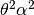

Extinction/recolonisation coalescent simulator¶
Introduction¶
This document provides a reference to the ercs Python module, which provides a straightforward interface to coalescent simulations of the extinction/recolonisation model. See [E08], [BEV10] amd [BKE10]
Examples¶
The most important features of ercs are illustrated by means of a series of examples.
Basic usage¶
The basic pattern of usage for the ercs module is to allocate an instance of the Simulator class, set some attributes on this instance, and then run simulate for some random seed. There are sensible defaults for most of the parameters in Simulator, but we must provide values for at least two of them before we can simulate. These are the sample and event_classes attributes:
import ercs
def first_example(seed):
sim = ercs.Simulator(20)
sim.sample = [(0, 0), (0, 5), (0, 10)]
sim.event_classes = [ercs.DiscEventClass(rate=1.0, u=0.5, r=1)]
return sim.simulate(seed)
Here we allocate a simulator on a torus of diameter 20, set up our sample and event classes, and the run the simulation. We specify a sample of three lineages, located at points (0, 0), (0, 5) and (0, 10).
Describe the event class.
Oriented trees and forests¶
The most part of ercs to understand is the way in which we encode genealogies. Running the example aboAve, we get
>>> first_example(3)
([[0, 4, 4, 5, 5, 0]], [[0.0, 0.0, 0.0, 0.0, 30441.574004183603, 46750.11224375103]])
(Note there is nothing special about the seed 3 here - it is just a value which produced a neat example to discuss). This output completely describes the ancestry of the sample, although it’s not immediately obvious how. In ercs we use oriented trees to represent the genealogy of a sample. In an oriented tree, we are only interested in the parent-child relationships between nodes, and don’t care about the order of children at a node. Therefore, in an oriented tree pi, the parent of node j is pi[j]. If we map each node in the tree to a unique positive integer and adopt the convention that any node whose parent is the special “null node” 0 is a root, we can then represent an oriented tree very simply as a list of integers.
In our example above, we have a list of three locations as our sample, and so we map these to the integers 1, 2 and 3 (i.e., lineage 1 is sampled at location (0, 0) and so on). The simulate method returns a tuple, (pi, tau); pi is a list of oriented forests (one for each locus) and tau is a list of node times (one for each locus). In the example, we are dealing with a single locus only, so pi is a list consisting of one list, [0, 4, 4, 5, 5, 0], that encodes the following tree:

The times labelled on the tree are derived from the node times list for this locus, tau[0]. The node times list associated with an oriented tree records the time that the associated lineage entered the sample, looking backwards in time (hence, for each node in the sample the time is 0.0).
Note
The zero’th element of an oriented forest and its associated node time list is not used and is set to zero as a convenience only. Its value should not be counted on in any way, and may change in the future.
Oriented forests occur when there is more than one root in a list pi, and so we have a set of disconnected trees. This can happen when we specify the max_time attribute, potentially stopping the simulation before the sample has completely coalesced. Consider the following example:
def oriented_forest_example(seed):
L = 20
sim = ercs.Simulator(L)
sim.event_classes = [ercs.DiscEventClass(rate=1.0, u=0.5, r=1)]
sim.sample = [(j, j) for j in range(10)]
sim.max_time = 1e5
pi, tau = sim.simulate(seed)
return pi[0]
Here we allocate a Simulator on a torus of diameter 20 as before and use the usual event class. This time we allocate a sample of size 10, arranged regularly in a lattice, and stipulate that the simulation should continue for no more then 10000 time units. As we’re only interested in the structure of the genealogy this time, we just return the oriented forest at the first locus. Running this, we get
>>> oriented_forest_example(5)
[0, 0, 15, 0, 12, 12, 13, 11, 13, 11, 16, 16, 14, 14, 15, 0, 0, 0, 0, 0]
This corresponds to the forest:
(Note that this forest is not a correct representation of the node times; in any simultation, node n + 1 cannot be more recent than node n). In this forest there are four roots: 1, 3, 15 and 16 (we ignore the nodes after 16 as they are all necessarily zero).
Most recent common ancestors¶
Suppose we wished to estimate the mean coalescence time for lineages sampled at a variety of distances. We can set our sample so that the lineages are located at the relevent distances, but it’s not clear how we can get:
def mrca_example(seed):
sim = ercs.Simulator(40)
sim.sample = [(0, j) for j in range(10)]
sim.event_classes = [ercs.DiscEventClass(rate=1.0, u=0.5, r=1)]
pi, tau = sim.simulate(seed)
sv = ercs.MRCACalculator(pi[0])
print("d", "\t", "coal_time")
for j in range(2, 11):
mrca = sv.get_mrca(1, j)
coal_time = tau[0][mrca]
print(j, "\t", coal_time)
Running this
>>> mrca_example(2)
d coal_time
2 44415.5647304
3 44415.5647304
4 44415.5647304
5 87644.571846
6 87644.571846
7 87644.571846
8 87644.571846
9 594298.339466
10 834992.341009
Multiple loci¶
Dealing with multiple loci.
Parallelism¶
The most common use of coalescent simulation is to estimate the distribution of some quantity by aggregating over many different replicates. This is done in ercs by running the simulate method with different random seeds, one for each replicate. Since each replicate is then completely independant, we can easily parallise the process. One possible way to this is using the multiprocessing module:
import ercs
import multiprocessing
def parallel_simulate(seed):
sim = ercs.Simulator(50)
sim.sample = [(1, 1), (2, 2)]
sim.event_classes = [ercs.DiscEventClass(rate=1.0, u=0.5, r=1)]
pi, tau = sim.simulate(seed)
coal_time = tau[0][3]
return coal_time
def parallel_example(num_replicates):
pool = multiprocessing.Pool(processes=multiprocessing.cpu_count())
coal_times = pool.map(parallel_simulate, range(1, num_replicates + 1))
return sum(coal_times) / num_replicates
In this example we are working on a torus of diameter 100, so the simulations require a lot longer to run. On most modern systems we have many CPU cores, and so we use the multiprocessing module to distribute the work of many replicates across these cores.
>>> parallel_example(100)
2968953.9276501946
This is the mean coalescence time among 100 replicates. The multiprocessing module runs parallel_simulate function for each of the seeds in a subprocess and collects the coalescence times into the list coal_times. We then take the mean of this list and return it. The random seeds are simply the integers from 1 to 100. This is a perfectly legitimate way to choose seeds for a single example, since the random sequences for adjacent seeds are not correlated. If, however, we are are doing lots of simulations with different parameter values or are distributing our simulations over several machines, it would be better to spread our choice of seeds out more evenly across the possible space. One way to do this is:
import random
seeds = [random.randint(1, 2**32 - 1) for j in range(100)]
There is no issue with using the Python random generator within your code, as the ercs C library generates random numbers independantly of Python (using the mt19937 random number generator from the GNU Scientific Library).
ercs – Module reference¶
Simulate the coalescent in the extinction recolonisation under a flexible set of parameters and related utilities.
Event Classes¶
- class ercs.DiscEventClass(rate, r, u)¶
- Class representing events from the Disc model, in which all individuals within distance r of the centre of an event have probability u of dying in the event and parents are thrown down uniformly within this disc. See [E08], [BEV10] or ... for details.
- class ercs.GaussianEventClass(rate, theta, alpha, u0)¶
- Class representing events from the Gaussian model, in which an individual at distance d of the centre of the event have probability of dying in the event. Parents are thrown down around the centre of the event according to a 2D Gaussian with variance . See [BKE10] for details.
Utilities¶
- ercs.torus_distance(x, y, L)¶
- Returns the Euclidean distance between two points x and y on a 2D square torus with diameter L.
- class ercs.MRCACalculator(oriented_forest)¶
Class to that allows us to compute the nearest common ancestor of arbitrary nodes in an oriented forest.
This is an implementation of Schieber and Vishkin’s nearest common ancestor algorithm from TAOCP volume 4A, pg.164-167. Preprocesses the input tree into a sideways heap in O(n) time and processes queries for the nearest common ancestor between an arbitary pair of nodes in O(1) time.
- get_mrca(x, y)¶
- Returns the most recent common ancestor of the nodes x and y, or 0 if the nodes belong to different trees.
_ercs – Module reference¶
The ercs module delegates the majority of its work to the low-level _ercs extension module, which is written in C. It is not recommended to call this module directly - the ercs module provides all of the functionality with a much more straightforward interface. In the interested of completeness, however, the low-level module is documented here.
Low Level Event Classes¶
In the _ercs module, event classes are specified by dictionaries of key-value pairs describing the rate events of a particular class happen, the type of event and the parameters unique to each event class. Each dictionary must have two fields: rate and type. The rate field specifies the rate that this class of events happens at and is a float. The type field specifies the type of events. The supported event classes are:
- Disc Events
- Events from the disc model have type equal to DISC_EVENT_CLASS and two further fields: r is a double value specifying the radius of the event and u is a double value specifying the impact of the event. Example: {“type”:DISC_EVENT_CLASS, “rate”:1.0, “r”:2.0, “u”:0.5}
- Gaussian Events
- Events from the Gaussian model have type equal to GAUSSIAN_EVENT_CLASS and three further fields: theta specifies the size of the event, alpha the relative location of parents and u0 the impact. Example: {“type”:GAUSSIAN_EVENT_CLASS, “rate”:1.0, “theta”:2.0, “u0”:0.5, “alpha”:0.75}
Simulation interface¶
- _ercs.simulate()¶
Allocates an ercs object from the C library, calls the simulate function and returns the resulting genealogy. All arguments must be specified and be in the correct order.
Parameters: - random_seed (long integer) – The seed used for the GSL random generator
- torus_diameter (double) – The diameter of the torus
- num_parents (unsigned integer) – The number of parents in each event
- sample (list of numeric (x, y) tuples) – The sample of 2D locations
- event_classes (list of dictionaries; see Low Level Event Classes) – The list of event classes and their rates
- recombination_probabilities (list of doubles) – probability of recombination between adjacent loci
- kdtree_bucket_size (unsigned integer) – The number of points in a kdtree bucket
- max_kdtree_insertions (unsigned integer) – The maximum number of insertions before the kdtree is rebuilt. If this parameter is 0 then the kdtree will not be rebuilt
- max_lineages (unsigned integer) – The maximum number of extant lineages. The library preallocates memory to handle this number of lineages; if we run out during the course of simulation a LibraryError is raised
- max_time (double) – the maximum time we simulate back into the past. If this parameter is 0.0 the simulation will continue until all loci have coalesced.
- ancestry_algorithm (unsigned int) – currently unused
Returns: the simulated history of the sample, (pi, tau).
Return type: a tuple (pi, tau); pi is a list of lists of integers, and tau is a list of lists of doubles
Raises: InputError when the input is not correctly formed.
Raises: LibraryError when the C library encounters an error
Bibliography¶
| [E08] | (1, 2) A. Etheridge. Drift, draft and structure: some mathematical models of evolution, Banach Center Publications 80, pp 121–144, 2008. |
| [BEV10] | (1, 2) N. H. Barton, A. M. Etheridge and A. Véber. A new model for evolution in a spatial continuum, Electronic Journal of Probability 15:7, 2010. |
| [BKE10] | (1, 2) N. H. Barton, J. Kelleher and A. M. Etheridge. A new model for extinction and recolonisation in two dimensions: quantifying phylogeography, Evolution, 64(9), pp 2701–2715, 2010. |